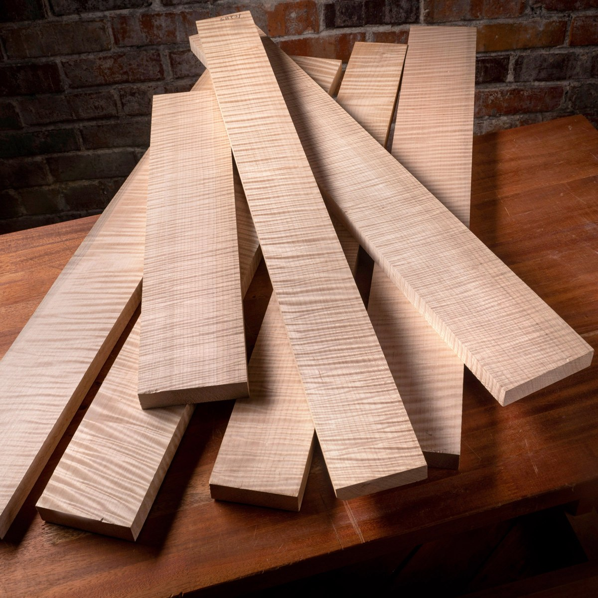
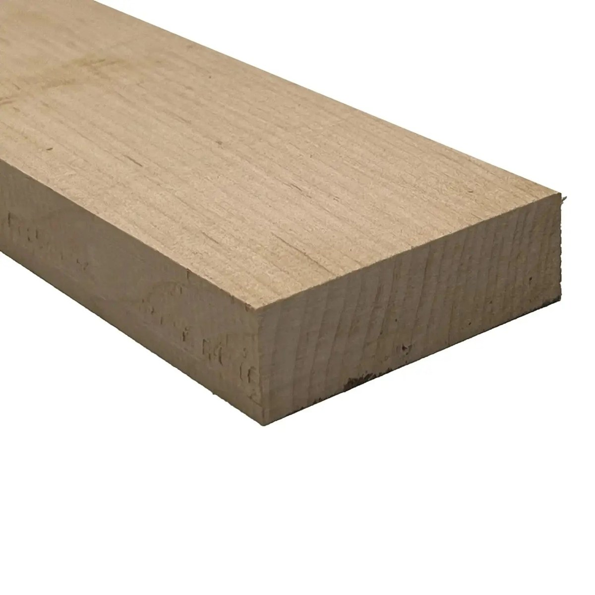
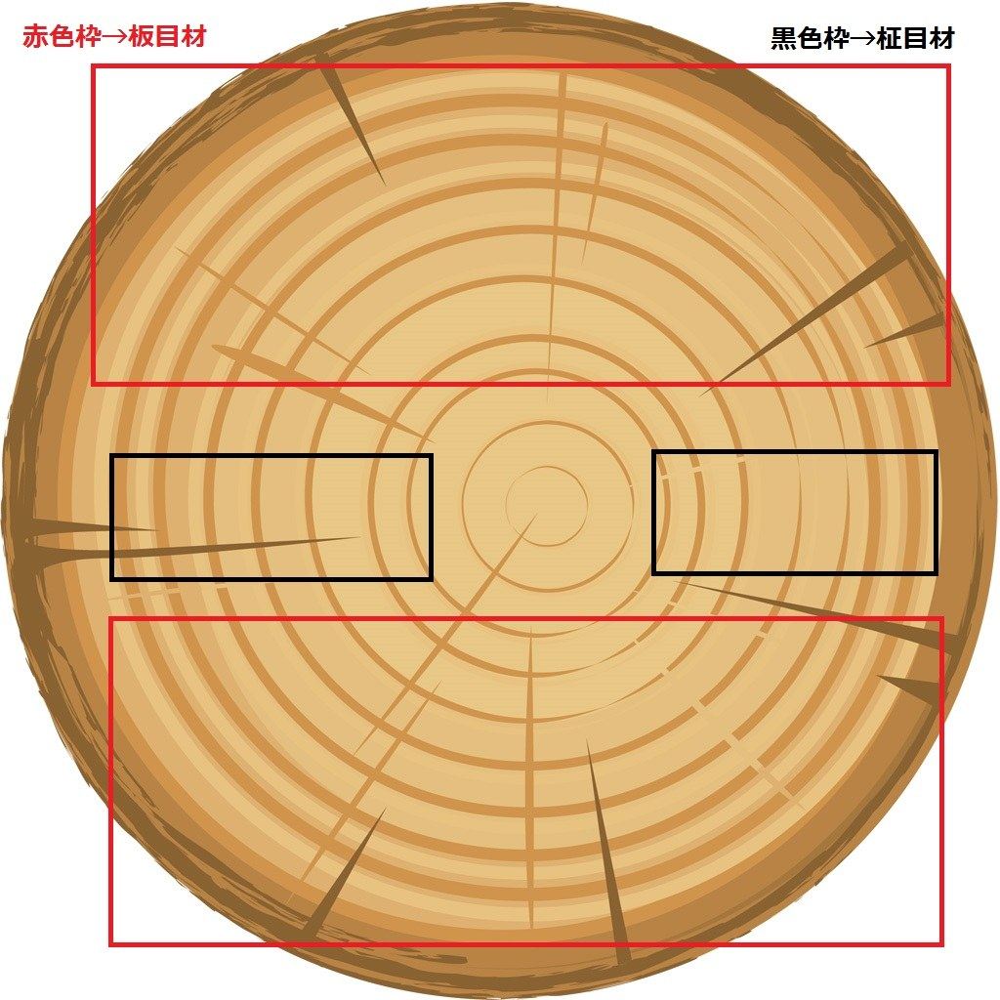
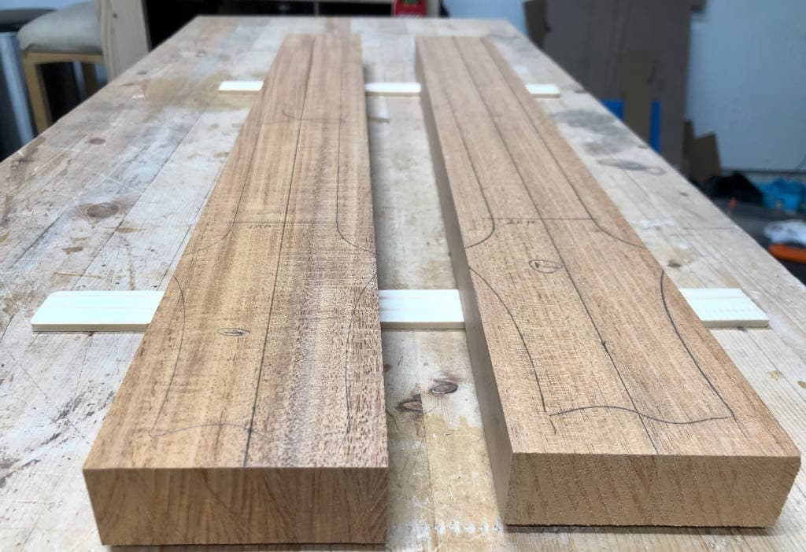
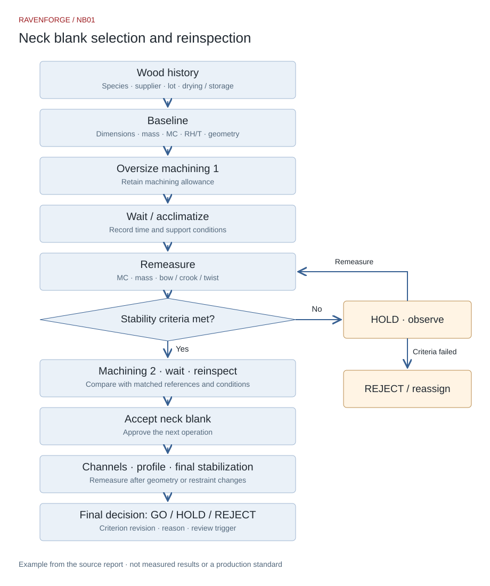
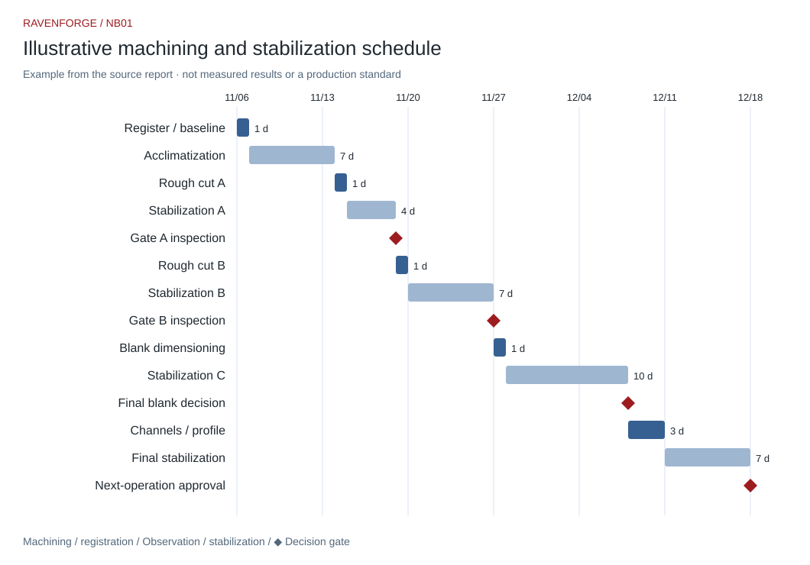

RESEARCH JOURNAL / NB01
Neck Blank Selection and Stabilization — From Craft Observation to Process Records
2026-11-06 · v1.1 · Video/literature review and experimental design / measurements pending
01. Research question and evidence
Do blanks from the same species and lot behave alike after machining? Does waiting and reinspection improve rejection decisions? Separate the maker’s account, published observations and RavenForge hypotheses. Timestamps come from the supplied research and earlier learning notes; the complete video transcript was not independently reverified during this edit. Storage years, drying-room residence and time retained in neck form remain distinct.
02. Process principles from the video
The notes at 00:39 motivate individual weight and condition records; 03:40 and 09:21 motivate staged machining and reinspection of stored material. The 10:38 and 16:47 segments become exercises in sawing, squareness, vertical drilling and parallel marking. These are paraphrases of earlier notes, not a verbatim transcript or confirmation of exact species and durations. [1]
| Timestamp | Earlier note summary | Record |
|---|---|---|
| 00:39 | Weight and condition vary within species | Lot, mass, dimensions, MC |
| 03:40 | Staged machining and selection | Removal, wait, decision |
| 09:21 | Stored wood can move after recutting | Before/after geometry |
| 10:38 | Sawing, squareness, vertical work | Dimensional/angular deviation |
| 16:47 | Finger-guided parallel marking | Target spacing, maximum error |
03. Literature: record condition, not just elapsed time
Wood exchanges moisture according to ambient temperature, relative humidity and its current moisture state. Log moisture content (MC) with temperature, RH and measurement position. FPL connects drying, handling and storage with control of dimensional change. Storage age alone cannot certify the geometry after the next cut. [2–3]
04. Limits of transferring neck research to bass design
Chen et al. studied 17 species for classical guitar necks under long-term loading and changing humidity. The public abstract reports relatively consistent deflection for mahogany and cedro and potential for walnut and alder. Quarter-sawn samples tended to be more stable, but orientation differences were not significant for most species. This does not qualify a 37–34-inch multiscale bass, a five-piece laminate or a particular reinforcement system. This edition checked the public abstract and bibliography, not every quantitative result. [4]
05. Master material record
Use Wood ID to join measurements, photographs and machining events. Separate trade name from botanical identification and supplier drying claims from measured condition. Mass divided by volume yields apparent density at the recorded moisture state, not automatically oven-dry density or specific gravity.
| Record group | Required fields |
|---|---|
| History | Project/Wood ID, species, supplier/lot, acquisition date, KD/AD/unknown, storage |
| Baseline | L/W/T (mm), mass (g), MC (%), temperature (°C), RH (%), instrument/correction |
| Grain/defects | Quarter/rift/flat/mixed, runout, knots/checks, reference faces A/B |
| Geometry | Bow/crook/twist (mm), gauge length/supports, width/thickness at A/B/C |
| Process | Timestamp, removal per face, before/after dimensions, wait start/end, restraint |
| Photographs | Front/side, both end grains, ruler with geometry, defects, measurement locations/display |
| Decision | GO/HOLD/REJECT, criterion revision, reason, next measurement, approver |
Reference images from the source report
Visual references retained from the original report. These are not RavenForge work or video stills; product photographs do not establish moisture content, stiffness or stability.

Source: StewMac

Source: Exotic Wood Zone

Source: イシバシ楽器

Source: Saucet Guitars
06. Measurement protocol and uncertainty
Fix reference faces A/B, support locations, gauge length, direction and observation timing. Define bow along the broad face, crook along the edge and twist as relative end-section rotation under a specified support arrangement. Record instrument, resolution, zero and repeatability. Two arbitrary corner heights do not establish overall twist. Retain raw millimetres and gauge length; do not assume deflection scales linearly with length.
07. Staged machining and decision gates
Inspect on arrival, acclimatize, rough-machine oversize, observe and remeasure, machine again, then reinspect before blank approval. Recheck after channels, profiling and bonding change geometry or restraint. End a waiting interval using environmental history, trends, uncertainty and remaining machining allowance. The source report’s illustrative periods, such as 3–14 days, are exploratory schedules rather than Marleaux standards or verified minimums.
| Decision | Condition | Action |
|---|---|---|
| GO | Meets predefined criteria; machining allowance remains | Approve next operation, not permanent stability |
| HOLD | Environmental change, continuing movement or uncertainty | Remeasure under matched conditions; extend observation |
| REJECT | Fails predefined criteria for this neck application | Quarantine/reassign; preserve reasons and raw values |
Neck blank selection and reinspection

Illustrative machining and stabilization schedule

08. Pilot experiments
All five studies below remain unperformed. Counts are feasibility starting points, not power calculations. Prefer matched blanks within a log or lot and random assignment. Retain raw data and exclusion reasons. Repeated time points do not increase the number of independent specimens. Match final dimensions, environment and total elapsed time for staged versus one-pass groups; compare both post-cut trajectories and a common endpoint.
| Study | Initial proposal | Measures and controls |
|---|---|---|
| E1 Staged/one-pass | Same lot n=10, five per group; explore 72 h between stages | Match final size/total time; Δbow/Δtwist and removal |
| E2 Stabilization trend | n=8–12; 0/6/24/48/72 h, 7/14 d | Geometry, mass, MC; define plateau using repeatability, not resolution alone |
| E3 Within-species mass | Same lot n≥20; before/after common acclimatization | Mass, volume, MC, apparent density; control size differences |
| E4 Quarter/flat | n=6 each; exploratory 40–45→65→40–45% RH cycle | Matched supports/load/size; humidity history, recovery, hysteresis |
| E5 Stored wood recut | n=8–10; 7 d baseline, symmetric/asymmetric removal | Match total removal; geometry/MC from 0 h to 14 d |
09. Connect hand-tool practice to production records
For sawing, record line deviation and cut squareness; for drilling, exit position and angle; for parallel marking, target spacing and maximum deviation. Repeat with controlled fixtures and specimens, recording time and rework. Finger-guided marking trains spatial judgment; inspect critical dimensions with a square, marking gauge and measuring tools. Furniture-course practice can supply these records without implying that proficiency has already been validated.
10. RavenForge application and next execution
Start with one species and lot: establish measurement repeatability, capture a baseline, then observe each machining stage. For EMBLA and ASKR laminates, trace each strip, orientation, adhesive, clamping, cure and assembled geometry separately. Unloaded blank stability cannot replace loaded finished-neck testing. Link the record to L04 to retain decision reasons and subsequent outcomes.
11. Current conclusion and open work
Adopt the recording and reinspection procedure. Do not yet certify species superiority, an effect size for staged machining, a universal waiting period, MC target or rejection tolerance. Revise criteria as data accumulate and retain failures. Domestic drying grades, numerical species shrinkage values and additional-paper details in the source report were not adopted as production requirements because their original sources were not sufficiently cross-checked for this edition.
Download blank record templates
Material card · CSV · Stage observations · CSV · Hand-tool practice · CSV
References and verification scope
[1] uses timestamp summaries in the supplied research report and earlier video notes. Official FPL bibliographies/abstracts [2–3] and the Ghent University bibliography/public abstract [4] were checked on 2026-11-06. Tables, protocols and CSV templates are RavenForge proposals. Four original reference images are restored with attribution; the Gantt and process diagrams are re-rendered from the source structure. The full video transcript is not redistributed.